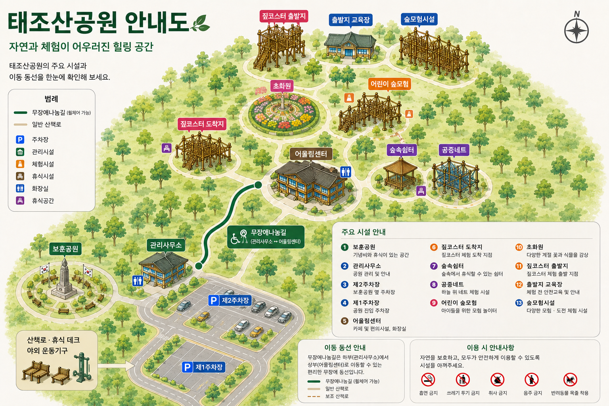

01
태조산공원 안내도
주요 시설의 위치와 공원 내 이동 동선을 확인할 수 있습니다.

ⓘ
안내도는 주요 시설의 위치를 확인하기 위한 참고용 이미지입니다. 각 시설의 자세한 이용정보는 시설 안내에서 확인할 수 있습니다.
02
공원 이동 안내
하부에서 상부 시설로 이어지는 주요 이동 흐름입니다.
01
제1주차장
공원 하부 진입부
↓
02
제2주차장
보훈공원 인접
↓
03
관리사무소
공원 관리 및 안내
↓
04
무장애나눔길
하부와 상부를 연결하는 주요 이동구간
↓
05
어울림센터
카페 및 편의시설
↗
06
상부 주요시설
숲속쉼터 · 공중네트 · 초화원 · 어린이 숲모험 등
03
주요 시설 안내
시설을 선택하면 해당 시설의 상세 안내를 확인할 수 있습니다.
04
하부 주요시설
공원 진입부에서 이용할 수 있는 주요 시설입니다.
보훈공원
기념비와 휴식공간이 조성된 공원입니다.
관리사무소
공원 이용 안내 및 관리 업무가 이루어지는 공간입니다.
제1주차장
태조산공원 하부의 주요 주차공간입니다.
제2주차장
보훈공원 및 관리사무소 인근에 위치합니다.